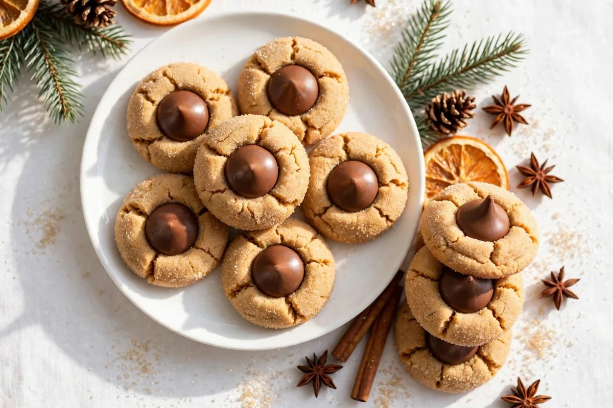
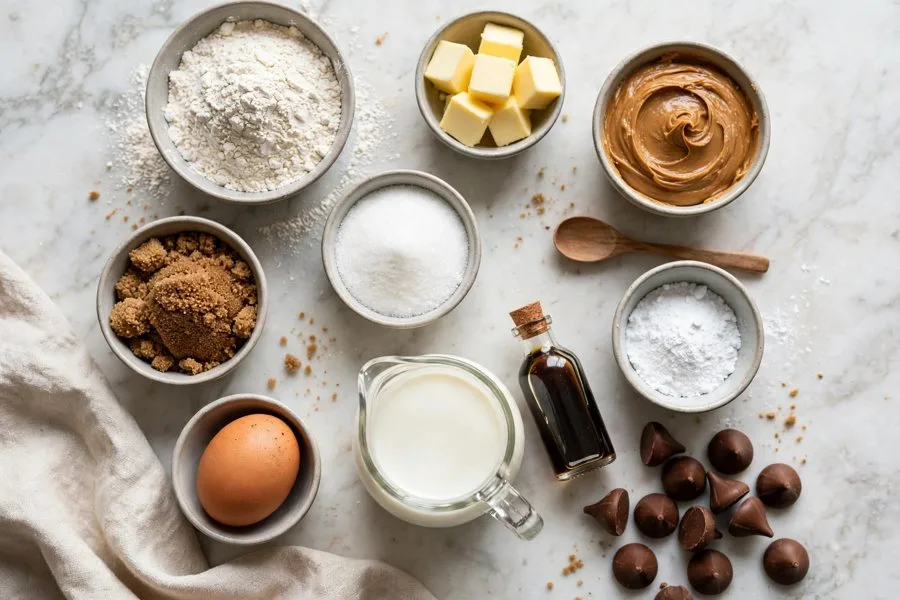
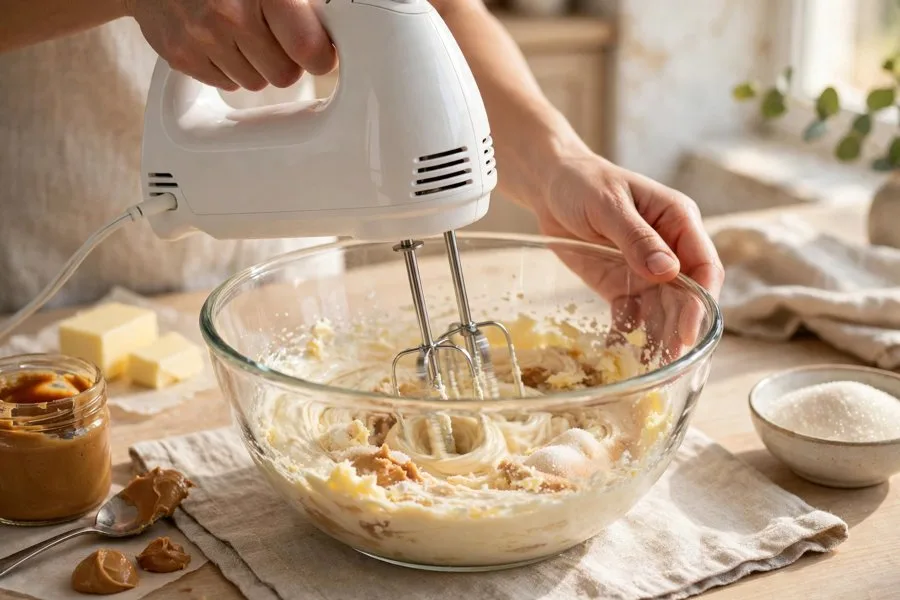
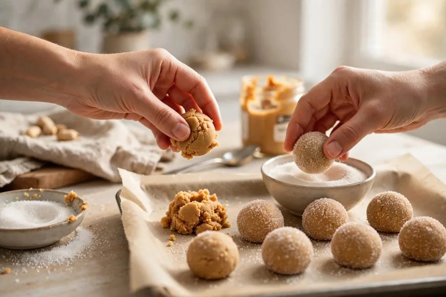
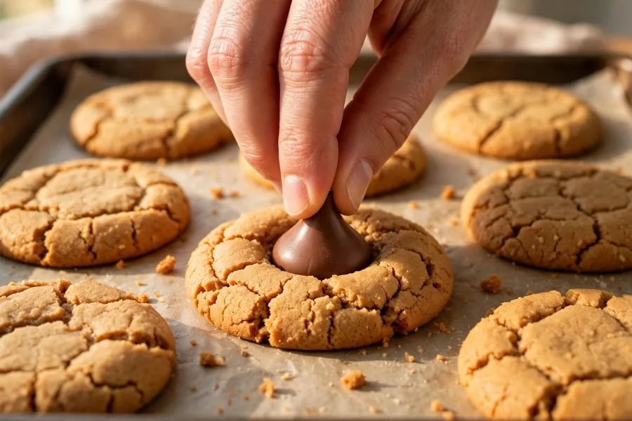
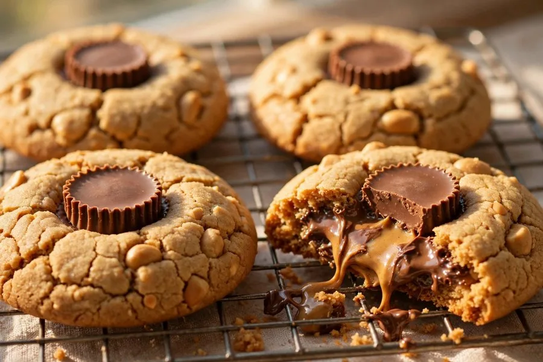
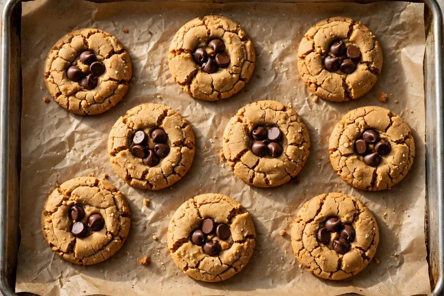
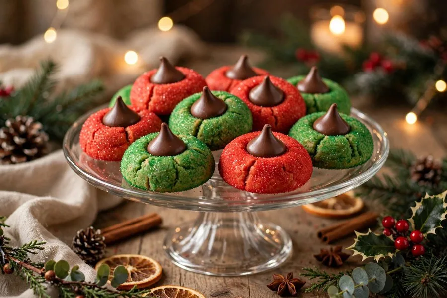
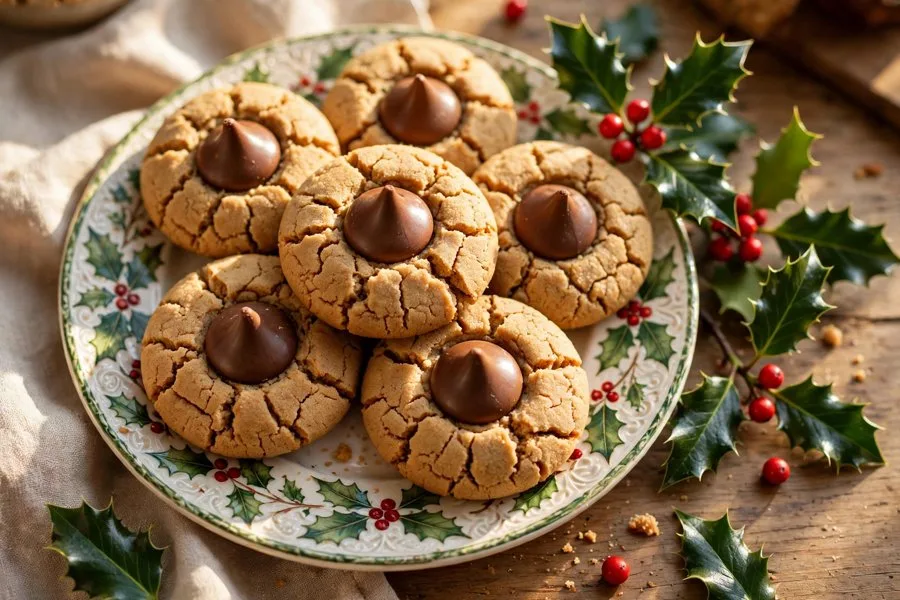

← Back to all recipes · Desserts · Christmas
Peanut Butter Blossoms
Soft, chewy peanut butter cookies rolled in sugar, with a chocolate kiss pressed into the middle while they are still warm. A classic Christmas cookie — and the one that disappears first from the cookie tray.
Jump to recipe ↓ 📌 Pin this recipe

Why you will love these cookies
These are the cookies everyone recognises at Christmas: a soft peanut butter cookie, crackled at the edges, sparkling with sugar, with a chocolate kiss melting gently into the top. They look festive with almost no decorating, they make a big batch — 48 cookies — and they are made for sharing, gifting and cookie trays.
The trick is in the timing. The kisses go on the second the cookies come out of the oven, while the centres are still soft. Press gently, let the chocolate soften, and then — this is the hard part — leave them alone until the chocolate sets again.
Peanut Butter Blossoms — full recipe
Ingredients

- Cookies
- ½ cup (115 g) unsalted butter, softened
- ½ cup creamy peanut butter
- ½ cup granulated sugar, plus extra for rolling
- ½ cup packed light brown sugar
- 1 large egg
- 2 tbsp milk
- 1 tsp vanilla extract
- 1¾ cups all-purpose flour
- 1 tsp baking soda
- ½ tsp salt
- To finish
- 48 chocolate kisses, unwrapped
Chocolate Kisses are small cone-shaped chocolates, pressed into the middle of each warm cookie.
Method — step by step
- Step 1 — Heat the oven and get the chocolate ready. Preheat the oven to 175°C (350°F). Line two baking trays with parchment paper. Unwrap all 48 chocolate kisses and keep them close by — you will need them the second the cookies come out of the oven.
- Step 2 — Beat the butter and sugars. Add the softened butter to a mixing bowl, then the peanut butter, granulated sugar and brown sugar. Beat with an electric mixer for about 2 minutes, until the mixture is pale, creamy and light. Why it matters: this step is what gives the cookies their soft, chewy centre.

- Step 3 — Add the egg and wet ingredients. Beat in the egg, milk and vanilla extract until everything is well mixed. Scrape down the sides of the bowl with a spatula so nothing is left unmixed.
- Step 4 — Make the flour mixture. In a separate bowl, stir together the flour, baking soda and salt. Add this to the peanut butter mixture and stir gently, only until the flour disappears. Do not overmix — mixing too much can make the cookies tough.
- Step 5 — Chill the dough. Chill the dough in the fridge for 30 minutes. It firms up a little, which makes the balls easier to shape and stops the cookies spreading too much while baking.
- Step 6 — Roll the cookie balls. Divide the dough into 48 pieces and roll each one into a ball about 1 inch across. Roll every ball in granulated sugar, then place on the trays about 2 inches apart.

- Step 7 — Bake. Bake at 175°C for 8–10 minutes, until the edges are set and lightly golden and the tops are just cracked. The middles will still look a little soft — that is right. Do not overbake: the cookies keep cooking a little on the hot tray after they come out.
- Step 8 — Press in the chocolate kisses. This is the special step. As soon as a tray comes out of the oven, press one chocolate kiss firmly into the centre of each warm, soft cookie. The edges will crack a little around it — exactly as they should.

- Step 9 — Cool. Leave the cookies on the tray for 5 minutes, then move them carefully to a cooling rack. Leave them completely alone until the chocolate sets again, then serve.
Tips for perfect cookies
- Chill the dough. Thirty minutes in the fridge is enough to stop the cookies spreading. If your kitchen is warm, chill the rolled balls on the tray for 10 minutes before baking.
- Do not overbake. Take them out when the edges are set but the middles still look soft. They finish baking on the hot tray.
- Work fast with the kisses. Press them in within a minute of the tray leaving the oven, while the cookies are soft enough to crack around the chocolate.
- If they go flat. Check you used real butter and regular peanut butter, and that the dough was chilled. A teaspoon of cream of tartar mixed in with the flour can also help keep them thicker and chewier.
Variations

Swap the chocolate kisses for mini peanut butter cups, pressed in the same way.

No kisses? Press a few chocolate chips into the warm centres instead.

Roll the balls in coloured sugar instead of plain sugar for a festive cookie tray.

The original — creamy peanut butter and chocolate kisses, just as the recipe says.
Make ahead & storage
The dough freezes well: roll it into balls, freeze on a tray, then keep in a bag for up to 3 months and bake from frozen, adding a couple of minutes. Baked cookies keep in an airtight container at room temperature for up to 5 days — if they last that long.
Let the chocolate set fully before stacking the cookies, or the kisses will smear. A sheet of parchment between layers helps.
What to serve with it
A cold glass of milk, hot chocolate, or coffee. These are made for Christmas cookie trays, school bake sales and gifting — pack them in a tin with parchment between the layers.
Kitchen equipment you will need
- An oven
- Two baking trays
- Parchment paper
- Mixing bowls
- An electric mixer or a hand whisk
- Measuring cups and spoons
- A spatula
- A cooling rack